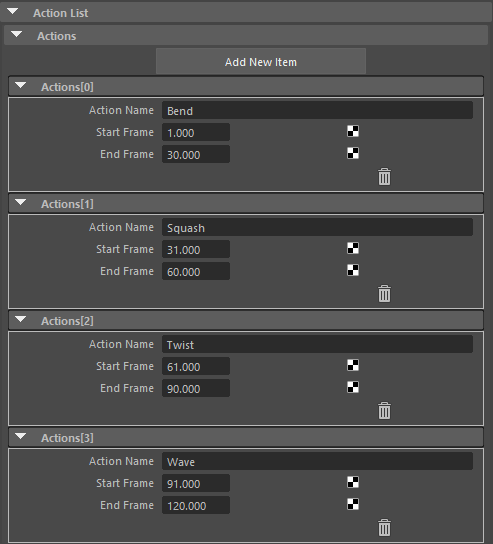
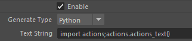
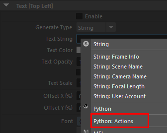

Actions (using external Python files)¶
Contents of this page:
Overview¶
Python scripts can be used to generate and display text tailored to the situation
This example shows how to output action information in combination with the
ActionsAttribute of the RenderOverride node
The text display can be switched as shown in the upper right corner.¶
Project file¶
This is the finished scene of this project (saved in Maya®2022)
Process¶
1. Actions Attribute Settings¶
Add information to the
ActionsattributeEnter ActionName/ StartFrame/ EndFrame¶
2. Preparing Python Scripts¶
This time, we will use the
actions.pyprovided by the pluginThe Python files are installed in
C:/ProgramData/Autodesk/ApplicationPlugins/RenderOverride/Contents/plug-ins/[OS-MAYA VERSION]/python/actions/.The
PYTHONPATHis passed when RenderOverride is loaded, so you can use it right away.(If you want to run your own Python code, it is recommended that you use
PYTHONPATHor similar to pass it through.)
3. Setting Text Attributes¶
Check
Enableof Text.Set
Generate Typeof Text to Python.Enter the following code in the
Text StringAttributeimport actions;actions.actions_text()
You can also enter code by right-clicking on the text box and selecting
Python: Actions.
4. Check display¶
Play the timeline, and if the display changes to look like the text in the upper right corner of the next video, you have succeeded.
See also